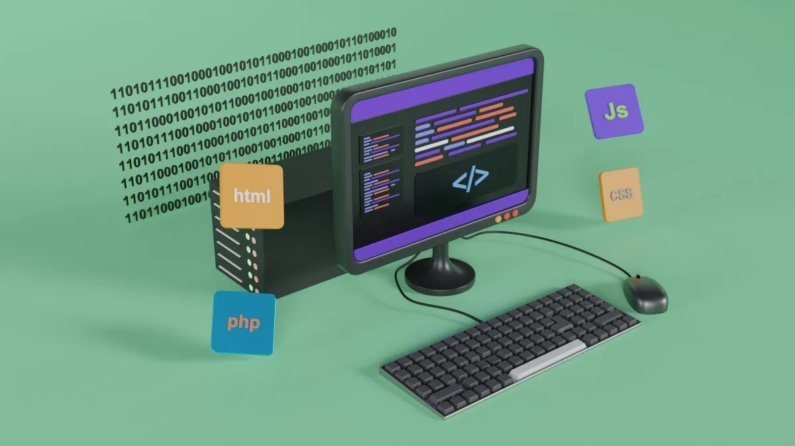

HTML, siglas en inglés de HyperText Markup Language, es el lenguaje fundamental con el que se estructuran los contenidos de una página web. Aprender HTML es el primer paso en el camino hacia el desarrollo web, ya que permite entender cómo se organizan y presentan los elementos en una página.
Una de las ventajas de HTML es su simplicidad. Con apenas unas pocas etiquetas básicas como <h1> para títulos, <p> para párrafos, o <a> para enlaces, ya se puede construir un sitio funcional. Esto lo convierte en una excelente opción para quienes se inician en la programación o el diseño web.
Además, HTML es la base sobre la cual se integran otras tecnologías como CSS (para estilos visuales) y JavaScript (para interactividad), formando así la tríada esencial del desarrollo frontend. Dominar HTML facilita el aprendizaje de estas herramientas complementarias y permite construir proyectos más sólidos y profesionales.
